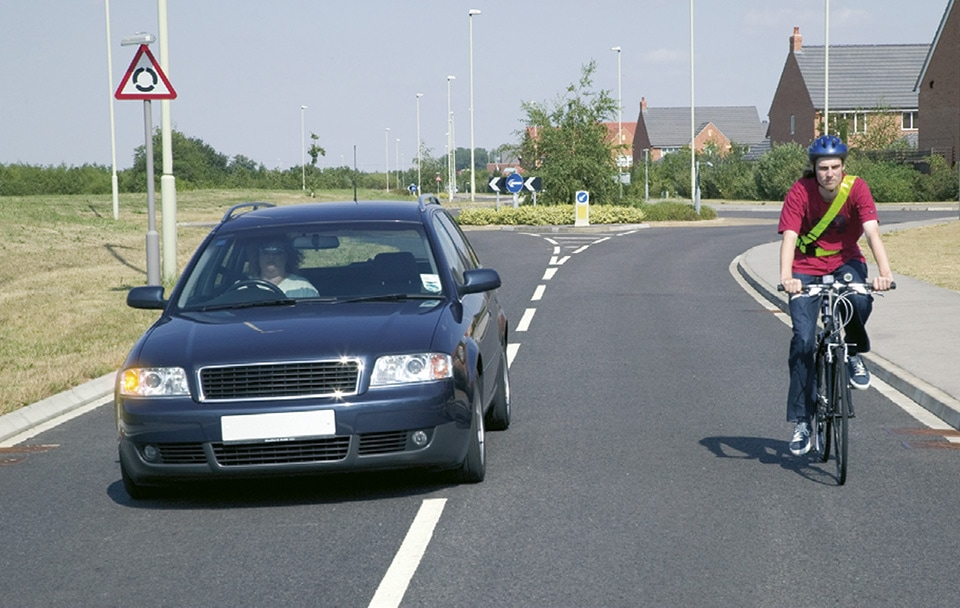
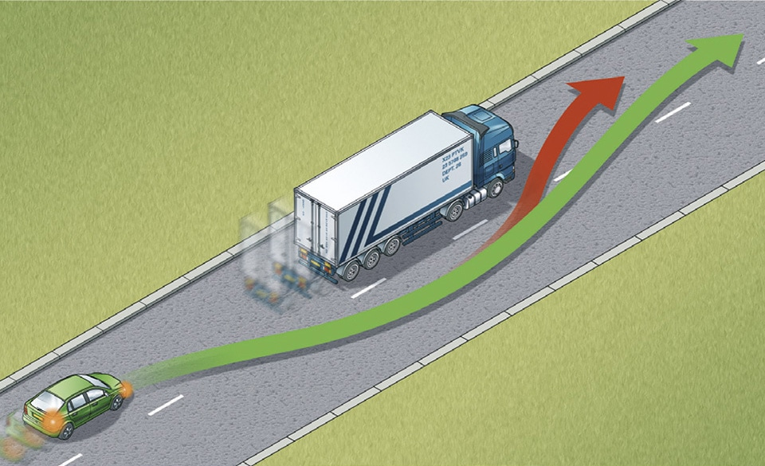

Using the road (159 to 203)
2. Overtaking (162 to 169)
162
Before overtaking you should make sure
163
Overtake only when it is safe and legal to do so. You should
Remember: Mirrors – Signal – Manoeuvre
Before overtaking you should make sure
- the road is sufficiently clear ahead
- road users are not beginning to overtake you
- there is a suitable gap in front of the road user you plan to overtake.
163
Overtake only when it is safe and legal to do so. You should
- not get too close to the vehicle you intend to overtake
- use your mirrors, signal when it is safe to do so, take a quick sideways glance if necessary into the blind spot area and then start to move out
- not assume that you can simply follow a vehicle ahead which is overtaking; there may only be enough room for one vehicle
- move quickly past the vehicle you are overtaking, once you have started to overtake. Allow plenty of room. Move back to the left as soon as you can but do not cut in
- take extra care at night and in poor visibility when it is harder to judge speed and distance
- give way to oncoming vehicles before passing parked vehicles or other obstructions on your side of the road
- only overtake on the left if the vehicle in front is signalling to turn right, and there is room to do so
- stay in your lane if traffic is moving slowly in queues. If the queue on your right is moving more slowly than you are, you may pass on the left. Cyclists may pass slower moving or stationary traffic on their right or left and should proceed with caution as the driver may not be able to see you. Be careful about doing so, particularly on the approach to junctions, and especially when deciding whether it is safe to pass lorries or other large vehicles.
- give motorcyclists, cyclists and horse riders and horse drawn vehicles at least as much room as you would when overtaking a car (see Rules 211 to 215). As a guide:
- leave at least 1.5 metres when overtaking cyclists at speeds of up to 30mph, and give them more space when overtaking at higher speeds
- pass horse riders and horse-drawn vehicles at speeds under 10 mph and allow at least 2 metres of space
- allow at least 2 metres of space and keep to a low speed when passing a pedestrian who is walking in the road (for example, where there is no pavement)
- take extra care and give more space when overtaking motorcyclists, cyclists, horse riders, horse drawn vehicles and pedestrians in bad weather (including high winds) and at night
- you should wait behind the motorcyclist, cyclist, horse rider, horse drawn vehicle or pedestrian and not overtake if it is unsafe or not possible to meet these clearances.
Remember: Mirrors – Signal – Manoeuvre

Rule 163: Give vulnerable road users at least as much space as you would a car
164
Large vehicles. Overtaking these is more difficult. You should
Large vehicles. Overtaking these is more difficult. You should
- drop back. This will increase your ability to see ahead and should allow the driver of the large vehicle to see you in their mirrors. Getting too close to large vehicles, including agricultural vehicles such as a tractor with a trailer or other fixed equipment, will obscure your view of the road ahead and there may be another slow-moving vehicle in front
- make sure that you have enough room to complete your overtaking manoeuvre before committing yourself. It takes longer to pass a large vehicle. If in doubt do not overtake
- not assume you can follow a vehicle ahead which is overtaking a long vehicle. If a problem develops, they may abort overtaking and pull back in.

Rule 164: Do not cut in too quickly
165
You MUST NOT overtake
166
DO NOT overtake if there is any doubt, or where you cannot see far enough ahead to be sure it is safe. For example, when you are approaching
167
DO NOT overtake where you might come into conflict with other road users. For example
168
Being overtaken. If a driver is trying to overtake you, maintain a steady course and speed, slowing down if necessary to let the vehicle pass. Never obstruct drivers who wish to pass. Speeding up or driving unpredictably while someone is overtaking you is dangerous. Drop back to maintain a two-second gap if someone overtakes and pulls into the gap in front of you.
169
Do not hold up a long queue of traffic, especially if you are driving a large or slow-moving vehicle. Check your mirrors frequently, and if necessary, pull in where it is safe and let traffic pass.
You MUST NOT overtake
- if you would have to cross or straddle double white lines with a solid line nearest to you (but see Rule 129)
- if you would have to enter an area designed to divide traffic, if it is surrounded by a solid white line
- the nearest vehicle to a pedestrian crossing, especially when it has stopped to let pedestrians cross
- if you would have to enter a lane reserved for buses, trams or cycles during its hours of operation
- after a ‘No Overtaking’ sign and until you pass a sign cancelling the restriction.
Laws RTA 1988 sect 36, TSRGD regs 10, 22, 23 & 24, ZPPPCRGD reg 24
166
DO NOT overtake if there is any doubt, or where you cannot see far enough ahead to be sure it is safe. For example, when you are approaching
- a corner or bend
- a hump bridge
- the brow of a hill.
167
DO NOT overtake where you might come into conflict with other road users. For example
- approaching or at a road junction on either side of the road
- where the road narrows
- when approaching a school crossing patrol
- on the approach to crossing facilities
- where a vehicle ahead is slowing to stop for a pedestrian that is crossing from a pedestrian island (see Rule 165)
- between the kerb and a bus or tram when it is at a stop
- where traffic is queuing at junctions or road works
- when you would force another road user to swerve or slow down
- at a level crossing
- when a road user is indicating right, even if you believe the signal should have been cancelled. Do not take a risk; wait for the signal to be cancelled
- stay behind if you are following a cyclist approaching a roundabout or junction, and you intend to turn left. Do not cut across cyclists going ahead, including those using cycle lanes and cycle tracks (see Rule H3)
- stay behind if you are following a horse rider or horse drawn vehicle approaching a roundabout or junction, and you intend to turn left. Do not cut across a horse rider or horse drawn vehicle going ahead
- when a tram is standing at a kerbside tram stop and there is no clearly marked passing lane for other traffic.
168
Being overtaken. If a driver is trying to overtake you, maintain a steady course and speed, slowing down if necessary to let the vehicle pass. Never obstruct drivers who wish to pass. Speeding up or driving unpredictably while someone is overtaking you is dangerous. Drop back to maintain a two-second gap if someone overtakes and pulls into the gap in front of you.
169
Do not hold up a long queue of traffic, especially if you are driving a large or slow-moving vehicle. Check your mirrors frequently, and if necessary, pull in where it is safe and let traffic pass.